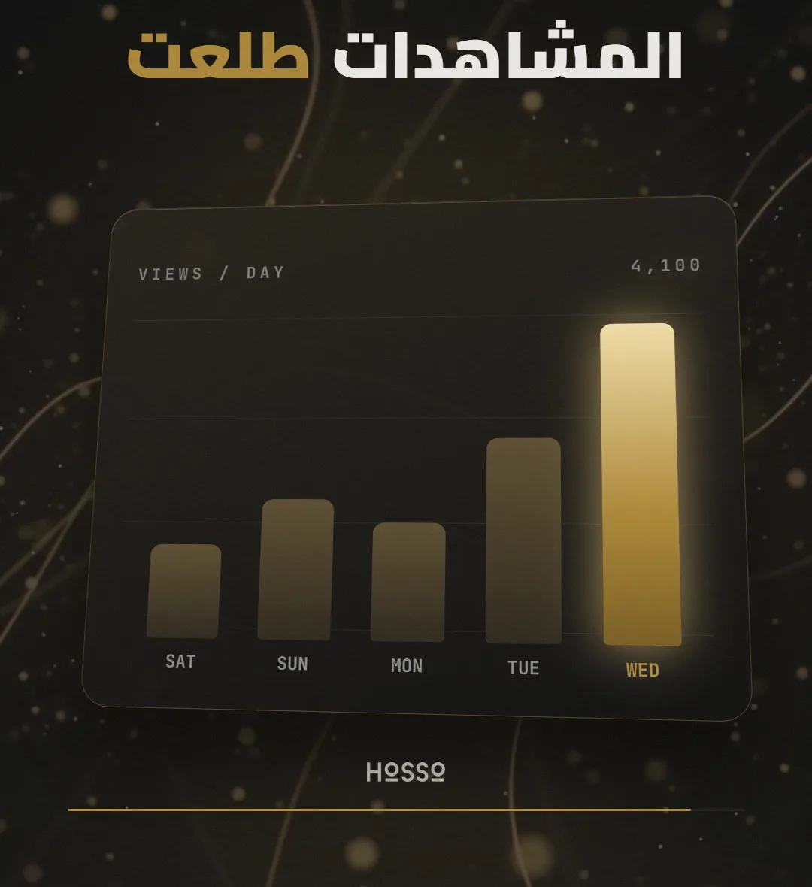
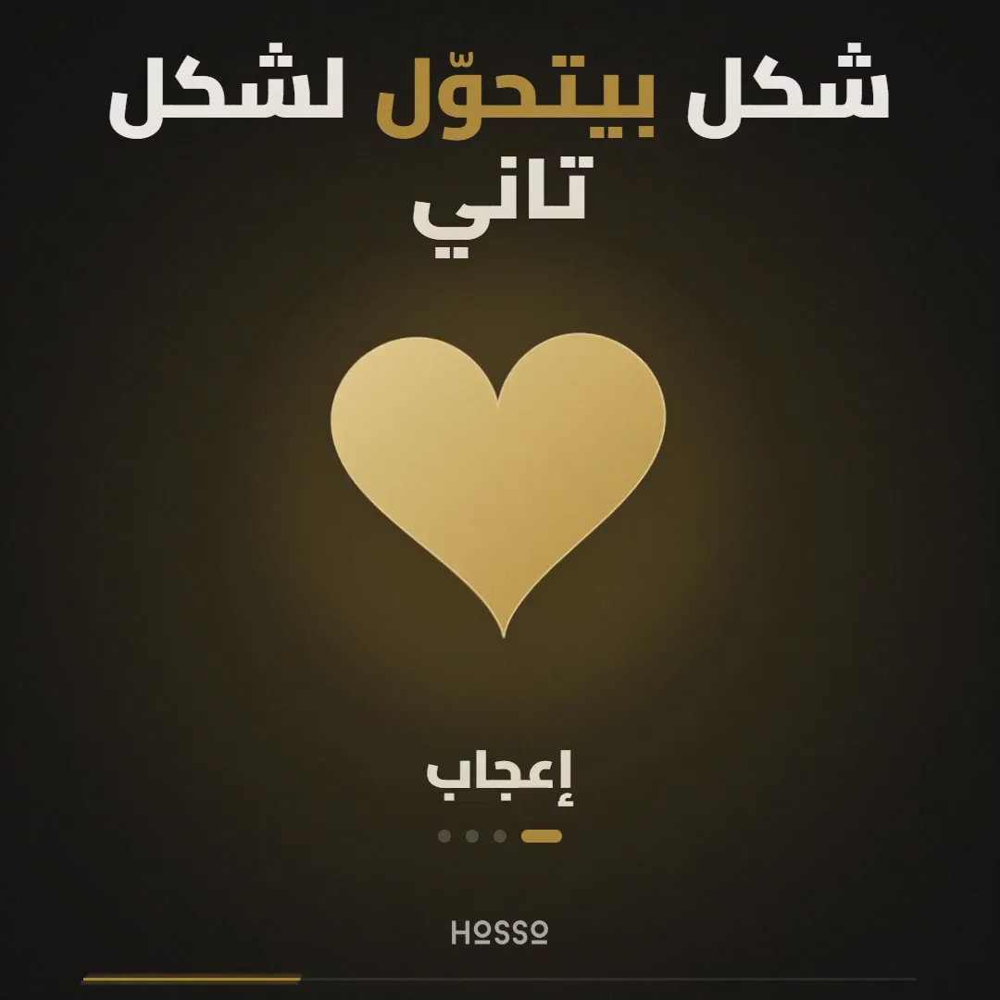
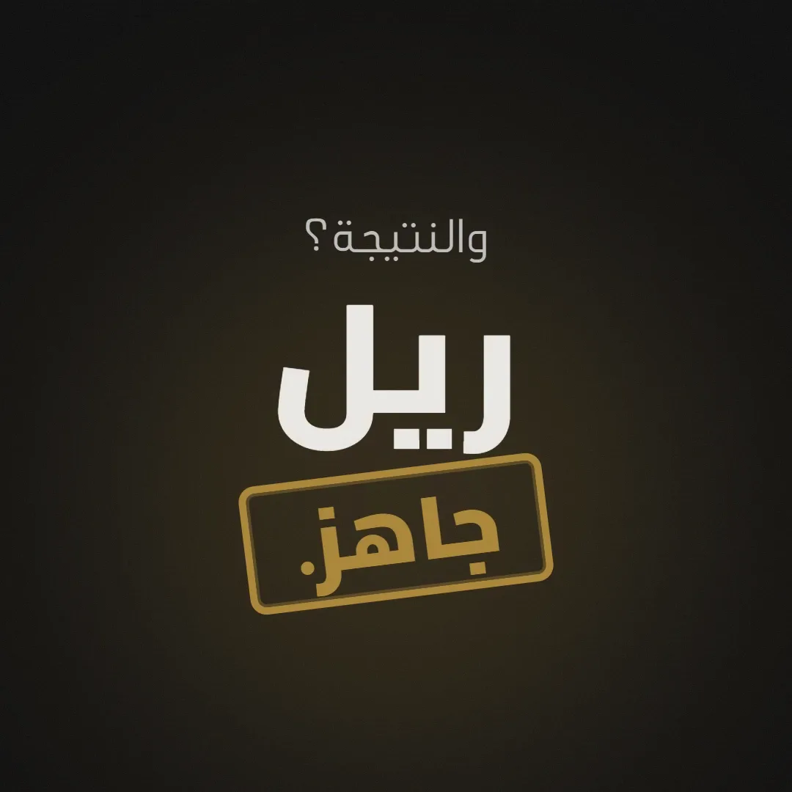
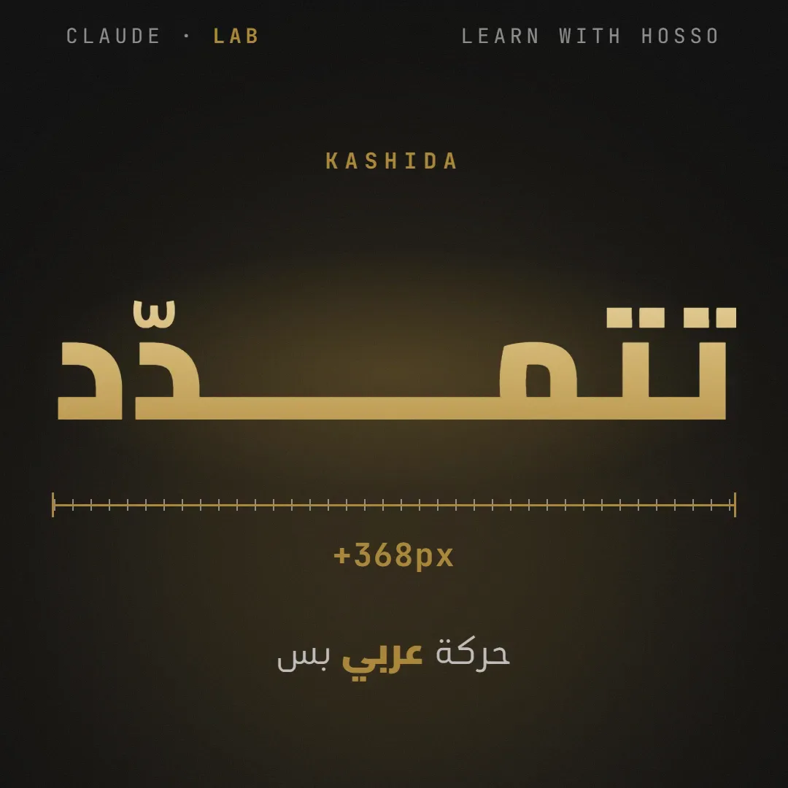
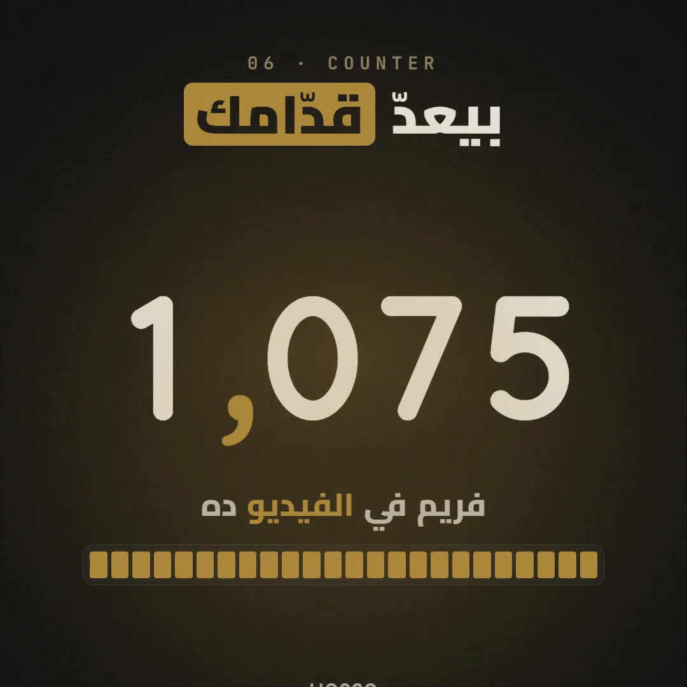
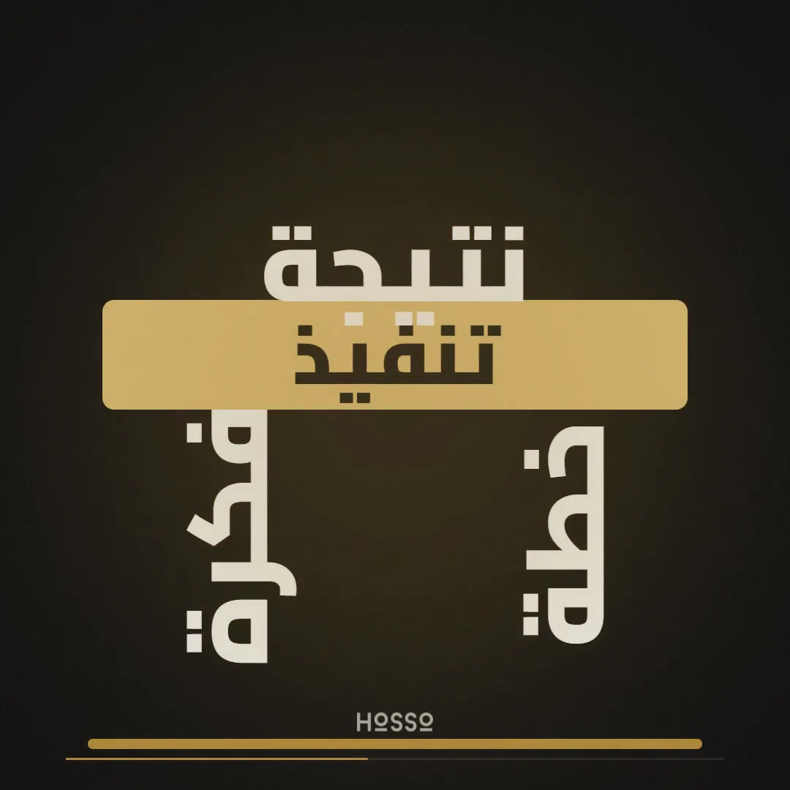

6 حركــاتبتوقف السكـــرول
خطوات الحلقة 17 من «بتعلّم Claude قدامكم»: الست حركات موشن اللي بستخدمها في ريلزي، ولكل حركة برومبت جاهز تديه لـ Claude Code مع HyperFrames.


- 01
جهّز الأدوات
محتاج Claude Code وباك HyperFrames الرسمي (الحلقة 8). افتح فولدر فاضي، واكتب claude، والصق أي برومبت من اللي تحت، وبعده قوله الكلام العربي اللي عايزه.
claude plugin install hyperframes@claude-plugins-official - 02
أعمدة 3D
داشبورد مايل، والأعمدة بتطلع واحد ورا التاني، وأعلى عمود بينوّر دهبي. أنا كتبت فوقه «المشاهدات طلعت».
Make a 4 second vertical HyperFrames scene: a dark dashboard card tilted in 3D, five bars grow up one after another, the tallest bar glows gold, with a short title on top. Render it to bars.mp4
الأعمدة وهي واقفة: أعلى عمود هو اللي بينوّر - 03
شكل بيتحوّل
دايرة بتبقى موبايل، وبعدين زرار تشغيل، وبعدين قلب، وتحت كل شكل كلمة.
Make a 5 second vertical HyperFrames scene: one gold shape morphs smoothly from a circle to a phone to a play button to a heart, with one word under each shape. Render it to morph.mp4
آخر شكل في التحويل: القلب وتحته كلمته - 04
ختم بيخبط
كلمة كبيرة بتظهر، وختم دهبي بيخبط عليها ويهزّ الشاشة هزة خفيفة. أنا استخدمت «ريل» والختم «جاهز».
Make a 3 second vertical HyperFrames scene: a big word appears, then a tilted gold stamp slams onto it with a small screen shake. Render it to stamp.mp4
الختم بعد ما خبط على الكلمة - 05
الكلمة بتتمد
حركة عربي بس: الكلمة بتطوّل بالكشيدة قدامك، ومسطرة تحتها بتقيس. أنا استخدمت كلمة «تتمدد».
Make a 4 second vertical HyperFrames scene: an Arabic word stretches wider by adding kashida between its letters, while a thin ruler under it counts the extra pixels. Gold on black. Render it to stretch.mp4
الكلمة بعد ما اتمدت 368 بكسل بالكشيدة - 06
عدّاد بيعد
رقم بيلف زي عدّاد العربية لحد ما يقف على الرقم بتاعك.
Make a 3 second vertical HyperFrames scene: a mechanical odometer counter rolls from 0000 up to 1,075, each digit spinning and settling, with a small line under it. Render it to counter.mp4
العدّاد وهو واقف على الرقم - 07
كلام بيتبني
كلمات بتدخل من الجناب وتتبني فوق بعضها زي إطار، وواحدة في النص على شريط دهبي. أنا استخدمت «فكرة، خطة، تنفيذ، نتيجة».
Make a 3 second vertical HyperFrames scene: four words fly in and lock together like a frame: two stand vertically on the sides, one slides in on a gold bar in the middle, and one drops on top. Render it to build.mp4
الأربع كلمات بعد ما اتبنوا فوق بعض
نصايح صغيرة
- الحركة بتوقف السكرول لما تيجي في أول 3 ثواني، ومعاها كلام بيوعد بحاجة.
- خلّي الحركة قصيرة (2 لـ 4 ثواني) ولون واحد بيلمع بس، والباقي هادي.
- مش عاجبك الإيقاع؟ قوله «خلّيها أسرع» أو «زوّد هزة خفيفة في الآخر» وهو يعدّل.